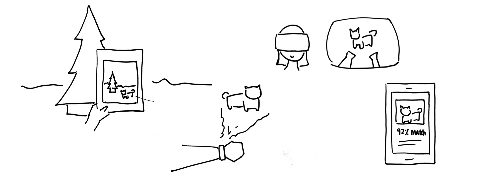

PetPaws
Finding a home for every animal
Every year in the US, millions of animals enter shelters to await adoption. Roughly 23% of dog owners and 31% of cat owners adopt their pets. However, a majority of people still get their pets from pet stores or breeders. This is where PetPaws comes in.
Designed for Android, PetPaws makes it easy and fun for potential pet owners to find the right pet for them. The app provides personalized adoption information and recommends pets that match the user's lifestyle.
Overview
PetPaws Android App
Role
Interaction Designer
Details
Design Exercise, 5 days
Tools used
Sketch, Marvel, Principle, Illustrator, OmniGraffle, Pencil & Paper
Problem
How might we better connect people looking for pets with the right animal for their lifestyle
Users
Potential pet owners
View your matches
You can view pets that best match your lifestyle. PetPaws uses machine learning methods to analyze your preferences and suggest the best matches.
Stay informed
Don't know how to get started? PetPaws creates a personalized experience based on your lifestyle to better inform you about pets and the adoption process.
See a pet in your room
With the augmented reality feature, you can view a potential pet right in your room! This helps you see how a pet could fit into your life.

High-Level Overview
Discovery
Understanding the User
To understand user needs, I conducted 9 interviews with people who have adopted a pet from the shelter, bought a pet from the pet store, or considered getting a pet. I also visited nearby shelters to speak with adoption specialists. Some responses included:
"I don't know where to start finding information. I think it's too expensive and time-consuming to find a pet."
- Participant who had never adopted a pet before
"It's hard to find any information online. Looking at pictures is not enough."
- Participant who had adopted a dog before
"I've been thinking about getting a dog for years. I just don't know how to get started."
- Participant who had never adopted a pet before
Based on my interviews, I created a map of the pet adoption process to help me identify user pain points. I categorized actions into three phases: Thinking/Researching, Visiting, and Getting Pet.
Analyzing the Competitive Landscape
Because there are solutions that help people find the right pet, I wanted to scope out the pet adoption field first. I looked at PetFinder, AllPaws, and shelter-specific sites.
The majority of sites focus on starting the adoption process by having users submit an application online. However, in my interviews, participants saw the sites more as a means to get information. Unfortunately, these means were not sufficient because the available information was too general and not tailored to fit the user.
Creating Personas
To capture my research findings, I created 2 personas based on quotes from my interviews.
While they lead different lives, Emily and Harrison have one common overarching goal: to find a pet that suits their lifestyle.
PROCESS
Establishing Assumptions
I decided to focus on the first two phases (Thinking/Researching and Visiting) of the pet adoption process because I found the most user pain points during these phases.
Assume there is access to resources provided by a large tech company, like Google. This allows me to think creatively and use tools such as augmented reality, virtual reality, and machine learning.
Assume shelters and rescues will have the necessary information about their animals. This makes the solution feasible.
Assume users are only looking for dogs or cats. For the purposes of this exercise, I focused on these animal because they are the most common pets in the US (after fish).
Brainstorming
After synthesizing my research insights, I conducted a brainstorming session to generate multiple ideas. I chose my final idea based on: technical feasibility and user impact.
Responsive Website
This would be a website where users could see available dogs. This was very feasible to create. However, this would have a low impact on user and I felt it wasn't as creative as the other ideas.
Pet Hologram Idea
Users wanted to see the pet in person and how it would fit into their homes. Some sort of pet hologram or projection could show users what the pet would look like in their space. However, I did not pursue this route because of technical feasibility.
AR App for Potential Pets
Because I found that users wanted to be able to see how a pet would look in their space, I thought about making that easier for them by using AR. A 3D rendering of the pet would show up right on their device. This is feasible and would have an impact on users.
VR App of Pet
A user wouldn't have to go to the shelter! They can easily view a pet's personality and interactions in a virtual space. However, this was not feasible within the given timeframe.
Matching Pets App
A user would enter information about their lifestyle and the app will recommend pets to them based on different factors. This is feasible and would have an impact on users as it suggests pets that best suits their life.
Design Guidelines
Based on my insights, I decided to combine two of my ideas to create an Android app with AR capabilities. This was feasible within the allotted time and would have the most impact on users. I chose to design an app because it would give users mobility and flexibility of use. Some guidelines that I came up with include:
Users should be able to see the pets that best fit their lifestyle
Through machine learning, the app will display and update recommended pets based on the user's inputs and preferences. This will help users find the perfect pet for them.
Users should be able to find relevant information
The app will tailor what information is presented, such as estimated costs for each pet that the user is interested in. This helps the user find information that is important to them.
Users should be able to see how the pet fits in their space
Using Google's ARCore, PetPaws will display a 3D rendering of an animal similar to the pet in the user's home. From my interviews, pictures alone are not enough for users to visualize how the pet will look in their home. This feature helps users determine if they have space for the animal and also gives users a fun way to see their future pet.
The app must account for different levels of pet knowledge
From talking to users, I found that people had varying levels of pet knowledge. Therefore, I made sure to account for these different types of users in my design.
Structuring the Experience
Before I started designing the screens, I created an information architecture map to help lay out the app's major functionalities.
I started designing screens by sketching out different variations of the UI on paper. This allowed me to ideate fast. I then put the screens into Sketch.
{kind=link}
Some sample sketches:
Laying out the structure
I chose to use a bottom navigation because I found that there were three main destinations a user would go to: viewing recommended pets ("Adopt"), getting information ("Inform"), and viewing their information ("You"). I considered separating the data within each view with a tab bar but got feedback that it would feel too clunky.
Pet Details Variations
These are different screens I was thinking of having on the Pet Detail page. Users can view pet detail information, schedule appointments, and view the pet in AR mode.
Displaying Costs
Cost was a main factor as to why potential pet owners did not end up adopting. I wanted to find a clean and simple way to convey the idea that the cost decreases dramatically after the first year.
User Flows
High-Level
I started by creating high-level flows for the two major phases of the adoption process: Thinking/Researching and Visiting a Shelter. Click to view more details.
{kind=link}
{kind=link}
Closer Look
Next, I broke down the two phases into three scenarios. These scenarios reflect a typical user's experience and accomodate for users with different levels of pet knowledge. To frame these use cases, I refer to my two personas: Emily and Harrison.
Phase 1: Thinking/Researching
Scenario 1 - Viewing Recommended Pets
Scenario 2 - Staying Informed
Phase 2: Visiting a Shelter
Scenario 3 - Scheduling a Visit
Scenario 1 - Viewing Recommended Pets
Emily is looking for a new dog but doesn't know where to get started. She doesn't know much about pets and shares an apartment in NYC with 2 roommates.

Step 1: Answering quiz
Emily answers a series of questions about her lifestyle.
Step 2: Getting recommendations
She submits her answers and sees her recommended pets.
PetPaws uses machine learning to analyze user responses and to recommend pets, increasing the chance that users will find a pet that fits their lifestyles.
Step 3: View pet detail
She scrolls through and clicks on "Chloe" to learn more.
Step 4: View pet in room
Emily is concerned about whether Chloe will fit in her tiny apartment. She clicks "See Chloe in your room".
Using Google's ARCore, the app will display a 3D rendering of the pet in the room so users can see how it will look in the space.
Step 5: Viewing estimated costs
She is also worried about the cost of adoption. She heard that it's really expensive to adopt a pet because of all the health issues. Emily scrolls down to view cost information.
PetPaws can estimate the average cost for Chloe by using the cost data from other similar pets. This information is displayed by year one and years after, because the majority of costs are incurred in the first year of adoption. This helps address concerns that adopting will be too costly.
Step 6: Favoriting a pet
"Phew!" Emily feels relieved to know the average cost of adopting a dog like Chloe won't be as high as she thought. She goes ahead and favorites Chloe.
Favoriting will allow PetPaws to learn more about user preferences and return better recommendations. With more data, the accuracy of recommendation will improve. This increases the likelihood that the user will find a pet that suits their lifestyle.
Step 7: Viewing Favorited Pets
Emily goes to "You" to see that Chloe has been added to a list of her favorited pets.
Scenario 2 - Staying Informed
Emily needs more information about pet adoption before she makes the leap, as adopting a dog is a serious life event.
Step 1: Getting personalized information
Emily clicks on "Inform" to view more information.
"Inform" is tailored to each individual user and will continuously update as PetPaws gets more information. This allows users to easily find relevant pet information to better understand the adoption process.
Step 2: Viewing recommended breeds
Emily doesn't know much about the different dog breeds. She clicks into the recommendations card to view more information about how her lifestyle can impact the kind of dog she gets.
Step 3: Viewing cards
Emily continues to scroll through to find out information about how different factors can affect her dog choice. She is pleasantly surprised that her average cost per year can be lower than her yearly budget.
Each of these cards is customized to the user to better inform them. Different lifestyles can influence recommended dog traits (e.g., breed, size, gender, temperament, and health status).
Step 4: Happy Stories
Emily sees a new card today. It's a recent news story about a rescue dog.
The Happy Stories feature shows positive outcomes of shelter and rescue animals. This will help alleviate worries the user may have about adopting from a shelter, increasing the chance an animal will be adopted.
Step 5
Emily feels like she has a better grasp of the pet adoption process. She feels confident in her abilities to adopt.
Scenario 3 - Scheduling a Visit
Harrison wants to find a cat for his daughter. He knows a lot about pets and lives in a single home with his wife and 2 kids. The family currently has 2 dogs they adopted previously.
Step 1: View all pets
Harrison toggles "Recommendations Only" off.
Giving users the ability to toggle off recommendations allows PetPaws to accommodate for different users and contexts. In addition, by giving users the option to do their own filtering and searching, PetPaws receives more information about the user, allowing the system to make better matches and to update the app with more relevant information.
Step 2: Apply filters
He selects some filters of pets that he thinks are important.
Tags and filters allow users to easily search for certain pet traits that they want.
Step 3: View pet details
Harrison selects Mac, a cat he feels will fit his criteria.
Step 4: View pet in room
His daughter wants to see Mac in her room! Harrison toggles on the AR View to show his daughter. She sees Mac right in her room. "This is so fun daddy!"
Step 5: Schedule appointment
Now that he knows his daughter likes Mac, Harrison schedules an appointment with the shelter.
In my interviews, users felt frustrated when they went to the shelter and the animal they want is gone. Having a schedule feature alerts the shelter that a family is interested in a certain animal, placing a hold on it until they arrive.
Step 6: View Appointment
Harrison sees that his appointment has been added. He feels comforted knowing that the shelter will have the pet available when he visits.
Design Details
Using Material Design
Throughout my design process, I consulted Google's Material Design Guidelines in order to make sure my app adhered to guidelines. I stuck to the guideline's keyline metrics and used an 8dp grid system to lay out the UI.
I chose bold and fun colors. I used Roboto because it is the standard Android font.
I chose to use a bottom navigation because I found that there were three main destinations a user would go to: viewing recommended pets ("Adopt"), getting information ("Inform"), and viewing their favorited pets/appointments ("You").

Getting User Feedback
Due to time constraints, I did not have have time to conduct a full usability test session. However, throughout the process, I got feedback from users about the design. I made a prototype in Marvel so users could click through to see if the flows made sense.
Getting user feedback is crucial. I find so much value in asking others for their opinions. Below are some changes that I made because I got to talk to users.
Adding the option to view all pets
At first, I did not have the option for users to view all pets. They were limited to just what the app recommended. However, I found that users also wanted the flexibility to see all pets and scroll through all the pictures.
Making "Schedule" a Floating Action Button
I originally did not have a floating action button on the pet detail page. Instead, I used a flat button to schedule an appointment. However, when users were looking at this screen, a lot of them did not see "Schedule". As a result, I decided to turn that button into a floating action button to promote the action.
Removing percentage match
Users were confused by the percentage match on the pet cards. They did not have a meaningful understanding of the percent values (e.g., the difference between "92% Match" and "75% Match"). I removed this feature and added a more relevant feature - displaying the pet's traits.
{kind=link}
{kind=link}
Next steps
Multiple Devices
During my design process, I started exploring different devices that PetPaws could be used on. A tablet view would be my next step. Due to time constraints of the design exercise, I did not have time to fully flesh out the tablet designs.
A VR Pet Shelter Experience
In my interviews, I found that users really liked being able to see a pet in-person so that they can see the pet's personality. Because of this, I thought about using Google Daydream to create a VR experience where users could see how the pet interacts. Due to time constraints and feasibility, I decided not to pursue this route for the exercise. However, if I had more time, I would like to prototype a VR shelter experience.
Some Final Thoughts
I love animals and this exercise gave me an excuse to go to the shelter to play with dogs. I also thought it would be interesting to learn about how someone goes through the pet adoption process as I have never owned a pet before.
Thanks for reading!
Note: 3D models for demonstrating AR concepts were used from Google Poly database. Animal images were either stock photos or photos of friend's pets given to me. Happy Stories video is from People Pets.